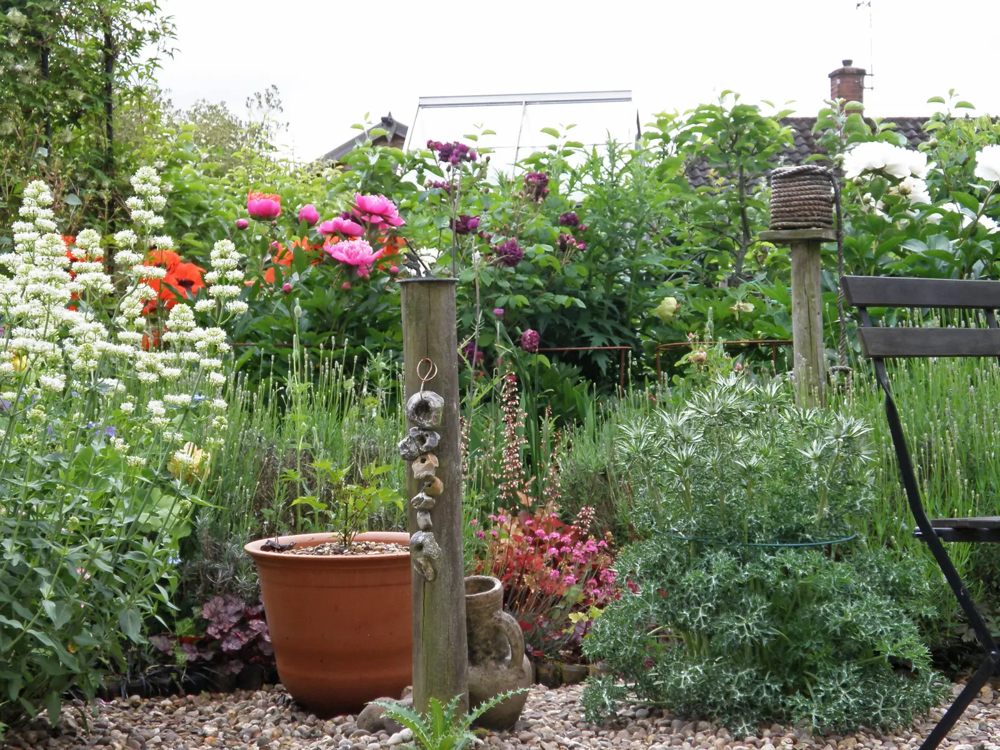

雨が降った後の水たまり、地面の勾配、排水ます・配管・境界の位置です。表面がきれいでも、水はけを塞ぐ施工は避けましょう。
一角だけ試し敷きして、砂利の袋数を決める
歩行用の平らな庭の一角で始めます。メジャー、ひも、レーキ、バケツと、選んだ防草シートに適合する固定・継ぎ目の部材を用意。車路や急な斜面は別の設計が必要です。
- 完成高さを先に決める
出入口の敷居、雨水ますのふた、花壇との境に印を付けます。砂利を入れた高さで扉やふたが開くかを確かめ、雨水が建物へ向かう場所には盛りません。
- 一袋で広さを確かめる
製品指定の敷き厚に合わせ、小区画に試し敷きします。例えば2 m²を5 cmにすると体積は100 L。袋の表示が20 Lなら計算上5袋です。kgだけの表示は同じ量のLと読み替えず、一袋が覆った面積から残りを求めます。
- 砂利を戻してシートを敷く
石や根で盛り上がる箇所をならし、シートを仮置きします。継ぎ目の幅とテープは製品の施工要領に合わせ、砂利を挟まないうちに処理。地中の設備が不明な場所に固定ピンを打ちません。
- 端から少しずつ配る
シートを引きずらないようにバケツで小分けに置き、均します。ふたの開閉範囲は空け、最初の一袋と同じ厚みになっているか、途中でも確かめます。
仕上がりの確認と、つまずいたときの直し方
- 仕上がり
- 歩くとシートが出る場所、靴で石が通路へ転がる場所を直し、雨のあとに水と砂利の行き先を見ます。
- 一部だけ沈んだら
- 周りから砂利を寄せる前に、その部分の石をよけ、下地のくぼみや継ぎ目の開きを確認します。
砂利は「面積×厚さ」で概算する
目安となる体積は、施工面積（m²）×砂利の厚さ（m）です。例えば10m²に厚さ3cmなら、10×0.03＝0.30m³。購入袋数は砂利の種類によるかさ密度・袋の重量で変わるので、販売店の表示で確認します。施工による沈み込みや不足分も見込んでください。
見た目だけで選ばない、砂利の3つの違い
| 砂利の種類 | 向きやすい用途 | 注意点 |
|---|---|---|
| 角のある砕石 | 歩行・駐車など締まりを重視する場所の下地 | 製品ごとの粒度、足触り、締固め方法 |
| 丸みのある化粧砂利 | 観賞用の庭や植栽周り | 転がりやすさ、歩きにくさ |
| 細粒の砂利 | 細部の見た目を整えたい場所 | 雨による流出・汚れ・靴への付着 |
選定は「色」だけでなく、用途・粒径・敷厚・下地の透水性をセットで検討してください。特に車の荷重がかかる場所は、表面の砂利だけでなく路盤を含む設計が必要です。
土・雑草・排水によって計画を変える
| 状態 | 事前の対応 | 避けたい失敗 |
|---|---|---|
| 土が柔らかい | 沈下・ぬかるみを確認して下地方法を選ぶ | 砂利だけ増やして沈下を放置 |
| 勾配が大きい | 砂利止め・流出対策を検討 | 大雨で砂利が低い場所へ流れる |
| 配管・雨水ますがある | 点検と清掃ができる状態を残す | 点検口をシートで埋める |
庭の手入れは設置したら終わりではありません。半年後に何を点検するかを決めておくと、シートの浮きや砂利の偏りが小さいうちに対処できます。
防草シートは固定方法で差が出る
不陸・石・根を除去してシートを敷き、重なり・端部・障害物周りが開かないようにするのが基本です。固定ピンは地盤条件に合う種類と長さを選び、配管・電線・防水層が埋まる場所へ無確認で打ち込まないこと。壁際や植栽周りの切込みが大きいと雑草が侵入しやすくなります。
袋数を計算する具体例
10m²に厚さ3cmなら、理論上の体積は0.3m³です。仮にかさ密度1.5t/m³なら約450kg、20kg袋なら約23袋が計算上の目安。実際は製品の密度・袋の実容量・締まり・ロスを販売店表示で確認してください。重量が大きくなるため、搬入回数や運搬方法も予算に入れます。
砂利の必要量・かんたん計算
面積と砂利の厚みを入力すると、必要体積と重量の概算を表示します。購入前の下調べにどうぞ。
かさ密度1.5t/m³は初期入力例です。商品や含水状態などで異なります。実際の袋数は販売店表示で確認し、ロスや沈下を加味してください。
基本の材料と道具
| 材料・道具 | 選ぶときのポイント |
|---|---|
| 防草シート | 耐候性、透水性、用途に適した耐久性 |
| 固定ピン・ワッシャー | 土質、シート仕様、固定間隔 |
| 砂利・砕石 | 粒径、歩きやすさ、見た目と必要量 |
| スコップ・レーキ | 整地とならし作業に使えるサイズ |
| 転圧用具 | 下地の状態に応じて採用を検討 |
測るところから仕上げまで、自分で進める6工程
既存の平坦な庭で、排水先や地面の高さを大きく変えない砂利敷きなら、面積の計測から除草、シート敷き、砂利ならし、片付けまで手作業で進められます。作業範囲を区切って、一工程ずつ確認しましょう。
- 施工範囲を測る。幅・長さ・障害物を図にし、雨水ます、散水栓、境界標、建物の基礎まわりを記入します。
- 雨上がりの水の流れを見る。水がたまる場所と流れる方向を記録します。建物や隣地へ水を向けるような勾配変更はしません。
- 草と石を取り、表面をならす。切り株や尖った石を除き、レーキで大きな凹凸を整えます。深く掘る作業は避け、埋設配管・配線が不明な場所ではピンも打ち込まないでください。
- シートを仮置きして合わせる。風の弱い日に広げ、障害物や点検ますに合わせて切り込みを最小限にします。ますのふたは開けられる状態を保ちます。
- 製品の施工要領どおり固定する。重ね幅、固定具、ピン間隔、テープの要否は製品ごとに異なります。説明書の指定を確認し、シートが浮かないように端部・継ぎ目を仕上げます。
- 砂利を小分けに敷いて仕上げる。一度に山積みせず、薄く広げて指定厚さに整えます。最後に歩いて偏りやシート露出を確認し、雨の後にも流出や水たまりを点検します。
手袋、長袖、保護眼鏡を使い、重い袋は小分けにして運びます。固定ピンを打つ場所の配管・配線位置は、作業前に敷地の図面や管理記録で確かめます。
失敗しやすい場所は端部と重ね部分
雑草が出やすいのは、シートの隙間、建物際、植栽まわり、端部です。重ね幅や固定方法は必ずシートメーカーの仕様に従い、砂利を敷く前にシートのたるみ・浮きを点検します。
作業を止めて先に確認するケース
擁壁にひび・はらみ・傾きがある、土を大きく削る・盛る、雨水の流れを変える、車が乗る路盤をつくる、埋設物の位置が分からない場合は、その部分の作業を止めます。まず敷地管理者や図面で条件を確かめ、必要な確認を済ませてから再開してください。平坦な既存地面への歩行用の砂利敷きとは作業を分け、無関係な作業まで外注する必要はありません。
防草シート、固定ピン、砂利の三点だけで予算を決めず、運搬・廃土・処分・下地調整も見込んでください。地下の設備や境界標を傷めないようにします。
道具は何からそろえる？
初回の小面積なら、メジャー、はさみ、手袋、スコップ、レーキなどの基本工具から。大面積の転圧機は保管や出番を考え、レンタルも比較してみてください。
作業前日までのチェック
- 雨天時の水の流れを確認したか
- 雑草・根・石を取り除く段取りがあるか
- シートの端部と重なり部分を固定できるか
- 砂利の搬入車両が敷地まで入れるか
- 残土や余った砂利の処理方法を決めたか
メーカーの施工手順を確認する
防草シートの重ね幅や固定間隔は、製品・地面・風の条件で変わります。以下は手順を確認するための公式案内です。記事中の一般説明より、購入した製品の最新説明書を優先してください。
この作業に使う道具・材料
広告 Amazonの商品紹介リンクを含みます。
- 砂利下用の防草シート
使用場所と施工方法が合うものを選び、継ぎ幅を足した必要面積で購入します。
Amazon.co.jpで防草シート（1 m × 10 m・固定ピン付き）を見る - レーキ
試し敷きの仕上げ用。狭い通路は道幅より小さいものを。少量の砂利なら手持ちの道具でも均せます。
Amazon.co.jpでレーキを探す